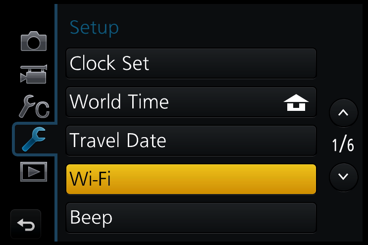
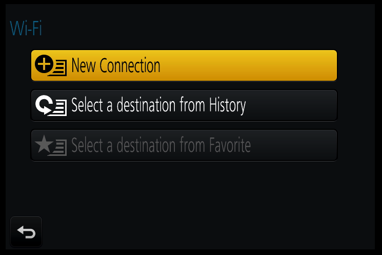
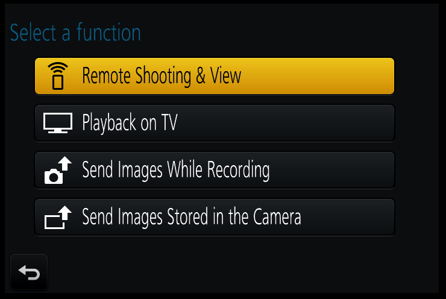
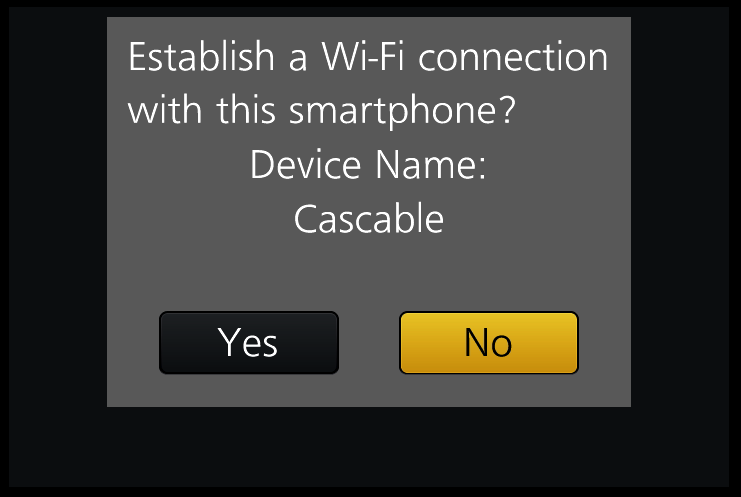
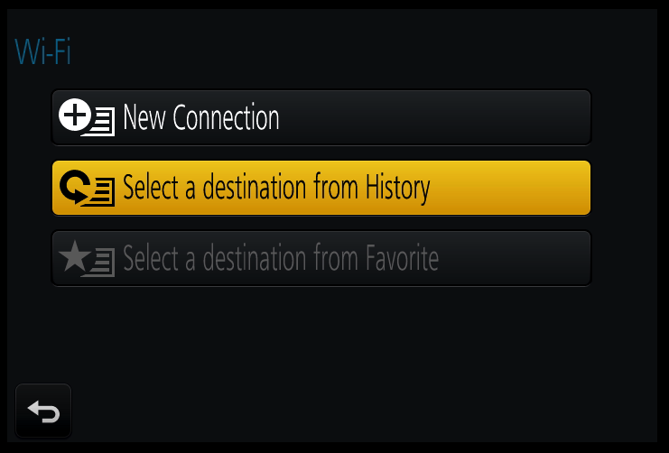
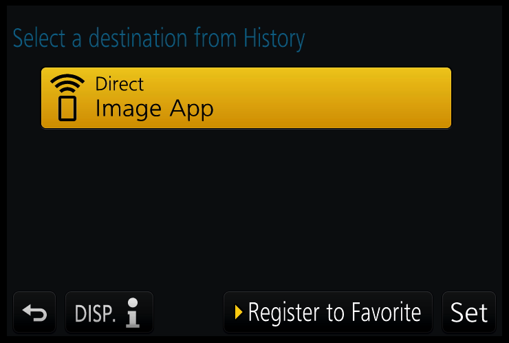
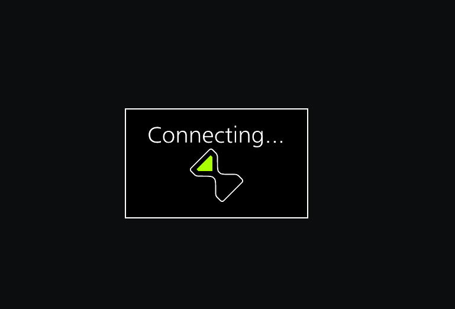

Before We Start
- Make sure your camera is supported by Cascable.
- Check that your camera's firmware is up-to-date.
- Check that Cascable is up-to-date.
Connecting Cascable to Your WiFi-Enabled Camera
- Press the Menu button on your camera and navigate to Wi-Fi in theSetup Menu.

- Select the Wi-Fi Function option.

- Press New Connection to use Wi-FI for the first time. See Note below for all future connections.

- Choose the Remote Shooting & View option on the next screen.

- On your iOS device, open Settings and navigate to Wi-Fi, then select the WiFi network and enter the password if one is displayed on your camera's screen when prompted.
- Launch Cascable on your iOS device. It should automatically detect and connect to your camera. Depending on the camera, you may be prompted to confirm pairing/connection on the camera screen before proceeding.

Note
Once you have used Wi-Fi for the first time on an iOS device, select Select a destination from History from the Wi-Fi Fucntion menu next time to quickly connect.
Simply select the option called Direct. Whilst the camera states Connecting... continue from step 5 above. You should not need to add the password again.



Still Stuck?
If you're still stuck, head over to the Cascable Website and we'll help you out.